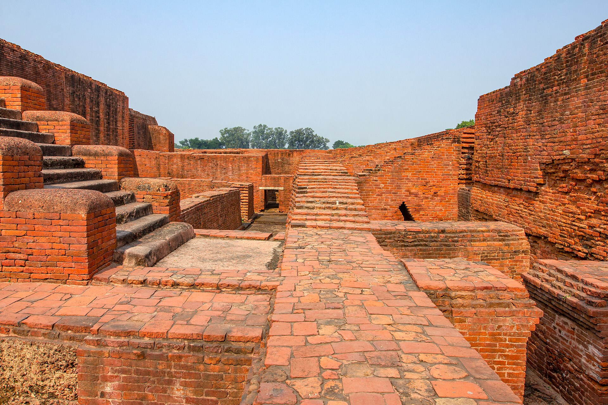

Lugares sagrados, ciudades antiguas, centros de aprendizaje, monasterios, rutas de peregrinación y paisajes culturales.
Esta colección examina las pruebas históricas, su contexto y sus incertidumbres. Las interpretaciones se identifican como tales; las reconstrucciones artísticas no se presentan como registros arqueológicos.
Ciudades de aprendizaje e intercambio
Nalanda, Taxila, Varanasi y Kanchipuram pertenecen a épocas e historias institucionales diferentes; no formaron necesariamente una red simultánea ni funcionaron como universidades modernas.

Ruinas de Nalanda Mahavihara en Bihar, centro histórico del aprendizaje budista. CC BY-SA 4.0, Wikimedia Commons. Image: Uphogaphy, Wikimedia Commons
Pruebas e interpretación: Esta colección examina las pruebas históricas, su contexto y sus incertidumbres. Las interpretaciones se identifican como tales; las reconstrucciones artísticas no se presentan como registros arqueológicos.
La geografía sagrada estudia cómo las comunidades religiosas y culturales atribuyen significado a los lugares y desarrollan rutas, memorias e instituciones relacionadas con ellos. Una montaña puede asociarse con lo divino; un río puede sostener tanto el culto como la subsistencia; un templo o monasterio puede conectar enseñanza, ritual, comercio y peregrinación. La historia de estos lugares no es solo la historia de sus edificios: también incluye a residentes, artesanos, comerciantes, patrocinadores y peregrinos.
Un lugar sagrado es un sitio al que se atribuye importancia religiosa. Una ruta de peregrinación es un viaje que conecta lugares y comunidades. Un paisaje cultural es un entorno más amplio, transformado con el tiempo por la actividad humana y los significados culturales. Estas categorías se relacionan, pero no son idénticas. La arqueología puede estudiar edificios, inscripciones y objetos; por sí sola no determina lo que un lugar significa hoy para una comunidad viva.
Agua, ecología y espacios sagrados
Las confluencias de ríos, estanques, pozos, manantiales y depósitos de agua de los templos pueden servir tanto a la vida cotidiana como a las prácticas rituales. Su historia material incluye construcción, reparación, sedimentación, cambios de cauce y transformaciones del uso del suelo. Un mismo cuerpo de agua puede tener importancia ecológica, económica y religiosa; conviene estudiar estas dimensiones sin confundirlas.
Estudio de caso: la colina Hemakuta en Hampi
La investigación sobre la zona de la colina Hemakuta, en Hampi, examina la evolución de los lugares sagrados shaivas y de las tradiciones de peregrinación aproximadamente entre 800 y 1325 d. C. El caso muestra que un paisaje de peregrinación no es necesariamente uniforme ni producto de un solo momento. Incluso los santuarios cercanos pueden tener distintas capas históricas, patrocinadores y comunidades.
Cómo estudiar un lugar sagrado con rigor
Utilizar estratos arqueológicos, fases constructivas e inscripciones para establecer la cronología.
Leer los textos según su lengua, género y contexto histórico.
Valorar la historia oral y las prácticas vivas, distinguiéndolas de la evidencia arqueológica.
Considerar el agua, el relieve, las inundaciones, la erosión y el crecimiento urbano.
Preguntar de quién es el paisaje que se está describiendo.
Un estudio sólido distingue con claridad entre pruebas, tradiciones e incertidumbres.